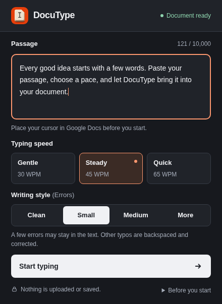
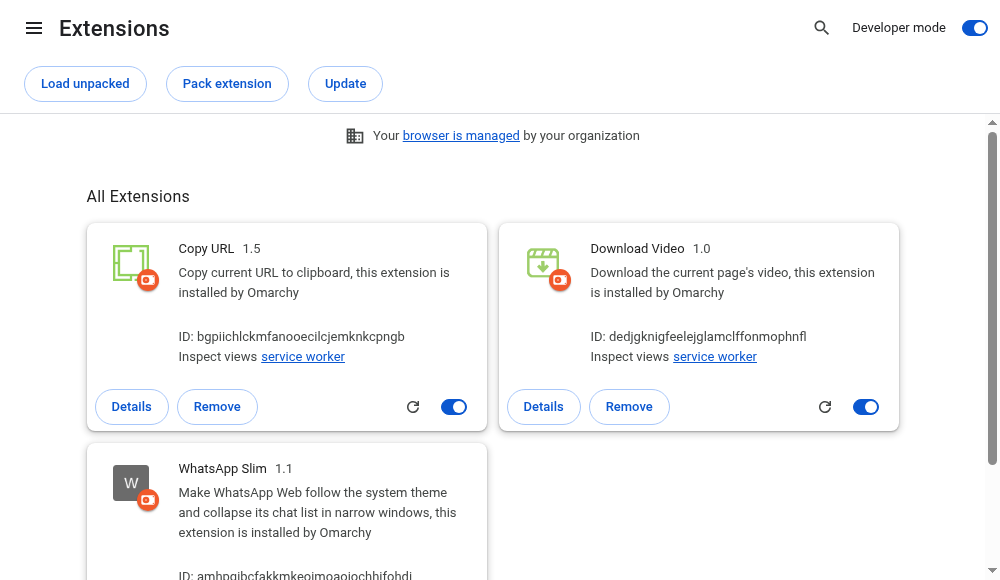

From passage to Google Docs.
Paste your text, pick a pace, and let DocuType type it into your document at the cursor.
Download for Chrome ZIP
Install in Chrome
Download the ZIP
Click Download for Chrome above. Look for
DocuType-main.zipin your Downloads folder.-
Extract the folder
Right-click the ZIP and choose Extract All or Extract Here. On macOS, double-click the ZIP. Open the extracted folder and check that it contains
manifest.json.Inside the extracted folder DocuType-main/ ├── manifest.json ├── content/ ├── icons/ ├── lib/ └── popup/
-
Load the extracted folder
Open
chrome://extensionsin Chrome. Switch on Developer mode, click Load unpacked, and select the folder containingmanifest.json. Chrome loads the folder from your computer.
Developer mode reveals Load unpacked. Open DocuType in Google Docs
Open an editable document and place your cursor. From Chrome’s extensions menu, open DocuType, paste your passage, choose a speed, and click Start typing.